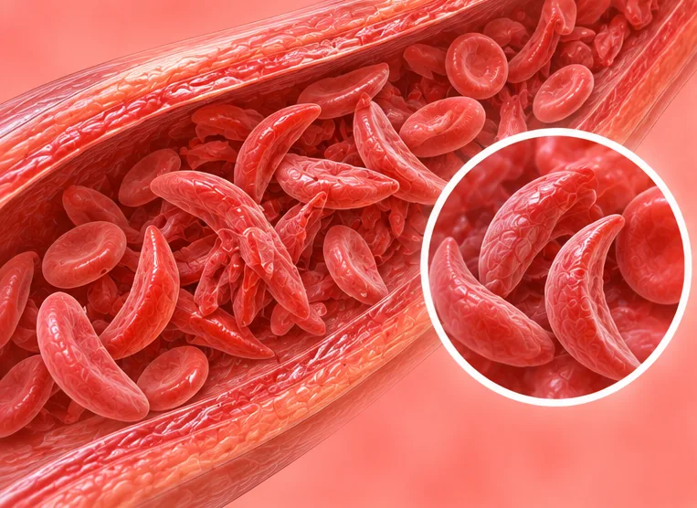

Darah
42 kondisi dan gejala
 Agranulositosis (sel darah putih sangat rendah)
Agranulositosis (sel darah putih sangat rendah) Anemia
Anemia- Anemia aplastik
- Anemia berat
- Anemia defisiensi besi
- Anemia hemolitik
- Anemia hemolitik autoimun
- Anemia megaloblastik
- Anemia mikrositik hipokromik
 Darah mudah menggumpal
Darah mudah menggumpal- Defisiensi G6PD (favisme)
- Gangguan pembekuan darah
- Hemofilia
- Hemokromatosis (kelebihan zat besi)
- Jaringan parut sumsum tulang (mielofibrosis)
- Kelainan hemoglobin (hemoglobinopati)
- Koagulasi intravaskular diseminata (DIC)
- Limpa tambahan
- Memar karena usia (purpura senilis)
- Neutropenia (jumlah neutrofil rendah)
- Pecahnya sel darah merah (hemolisis)
- Penyakit darah
- Penyakit Gaucher
- Penyakit kuning hemolitik
- Penyakit von Willebrand
- Polisitemia vera (sel darah merah berlebih)
- Porfiria
- Porfiria intermiten akut
- Protein darah rendah (hipoproteinemia)
- Purpura simpleks
- Purpura trombositopenik (trombosit rendah)
- Purpura trombositopenik trombotik (TTP)
- Radang kelenjar getah bening (limfadenitis)
- Radang kelenjar getah bening akut (limfadenitis)
- Radang kelenjar getah bening leher (limfadenitis)
- Reaksi leukemoid (sel darah putih tinggi)
- Sel darah putih rendah
- Sindrom hemofagositik (HLH)

Talasemia- Trombosit rendah (ITP)
- Trombositemia esensial (jumlah trombosit tinggi)
- Trombositosis (jumlah trombosit tinggi)